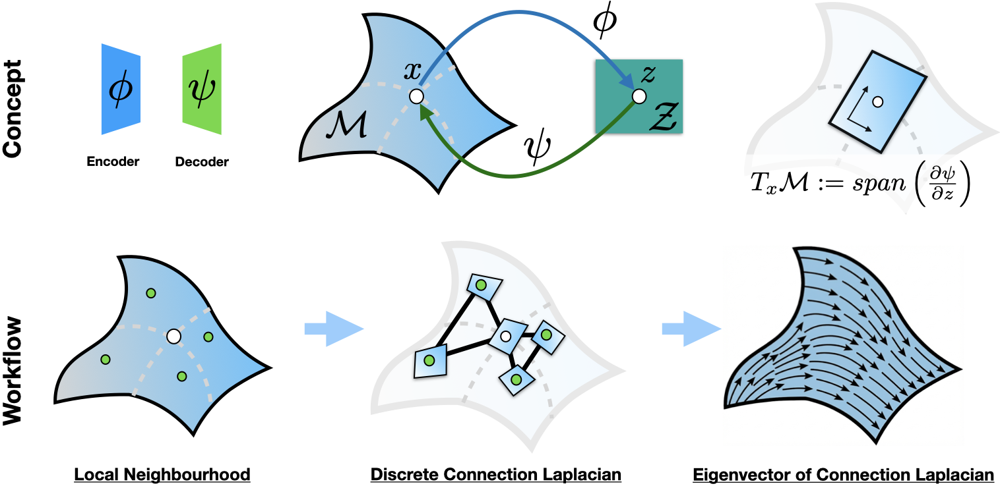

Stop Throwing Away Your Decoder
Latent-XAI extracts the learnt local coordinate system of a VAE decoder using the Connection Laplacian — turning the "black box" of generative modelling into a transparent geometric map.
Abstract
Variational Autoencoders (VAEs) have become central tools for analysing high-dimensional data in single-cell biology, molecular dynamics, and clinical research. By compressing data through an encoder and reconstructing it through a decoder, they learn a compact latent representation of the underlying data manifold. Yet in practice, once training is complete, the decoder is almost universally discarded — treated as a mere utility that served its purpose and is no longer needed.
This is a missed opportunity. A decoder that can faithfully reconstruct high-dimensional data from a low-dimensional code must, by necessity, have encoded the geometric structure of that data within its weights. The shape of the manifold — its curvature, its principal directions, its branching structure — is all there, stored implicitly in the parameters of the network. Latent-XAI is built on this observation: rather than discarding the decoder, we use it as a geometric map of the data manifold.
At the heart of Latent-XAI is a fundamental shift in how we think about explainability for generative models. Existing XAI approaches for VAEs focus on the encoder — asking which input features are most sensitive to each latent variable. But if the latent space does not align with the true intrinsic directions of the data, this sensitivity is uninformative. Instead of asking "which single feature drives this latent code?", Latent-XAI asks: "what are the coherent, dominant directions of change that characterise the local neighbourhood of this data point?"
To recover these directions, Latent-XAI computes the Jacobian of the decoder at each latent point — the matrix that describes how a small perturbation in the latent code translates into change in the ambient data space. These Jacobian-derived local tangent frames are then aligned across the data manifold using a discrete Connection Laplacian, a spectral operator that propagates directional information consistently across neighbouring points. Its eigenvectors are parallel vector fields: globally coherent directions of change that collectively form intrinsic coordinate charts of the manifold — directly in the ambient feature space, not in the latent space.
This approach works even when the encoder severely distorts the latent representation, because the geometry is recovered from the decoder, not the encoder. We validate this across four datasets of increasing complexity: the Swiss Roll and Twin Peaks synthetic manifolds (recovering exact intrinsic coordinates and curvature-driven spiral fields), Alanine Dipeptide (identifying free-energy potential wells in 66-dimensional molecular dynamics data invisible in the latent space), and a pancreatic scRNA-seq dataset (delineating Alpha and Beta differentiation lineages as perfectly orthogonal directions — using spliced counts alone, without RNA velocity). Because Latent-XAI requires only a trained decoder and a query dataset, it can be applied post-hoc to any pretrained differentiable model, offering an independent and quantitative tool for characterising and comparing learnt VAE representations.

Fig. 1 — Latent-XAI concept. Top row: A VAE encodes data into a latent representation, then the Jacobian of the decoder defines the tangent space. Bottom row: Given a neighbourhood of points, decoder-derived tangents build a discrete Connection Laplacian, whose eigenvectors characterise flows over the manifold.
Key Ideas
Decoder as Geometric Repository
A decoder that reconstructs faithfully must have encoded the manifold's geometry in its weights — its curvature, principal directions, and branching structure. This geometric information survives even in a vanilla VAE with no specialised priors. Latent-XAI unlocks it.
Jacobian over Local PCA
Rather than estimating tangent spaces from local PCA — which is sensitive to sampling density and noise — Latent-XAI computes the Jacobian J = ∇ψ(z) of the decoder at each latent point. Its top H singular vectors (via SVD) form model-derived, noise-robust tangent frames that encode the local geometry directly from the decoder weights.
Parallel Transport Across Gauges
Tangent spaces at different points live in different local coordinate systems ("gauges") and cannot be directly compared. The discrete Connection Laplacian aligns them via parallel transport maps Qij = Ti⊤Tj, enabling globally coherent directional analysis across the entire manifold.
Spectral Manifold Diagnosis
The eigenvalue spectrum of the Connection Laplacian diagnoses the manifold's intrinsic structure. Spectral gaps reveal the number of smooth global coordinate charts — two for the Swiss Roll, four for Twin Peaks. Higher eigenvectors capture curvature and deformation: spiral fields around energy minima, saddle-point behaviour near potential wells, and bifurcation directions in branching lineages.
Encoder-Agnostic Geometry Recovery
The encoder often distorts or flattens the data manifold — a Gaussian prior compresses a Swiss Roll into a disk, hiding all curvature. Yet Latent-XAI recovers the true geometry from the decoder regardless of this distortion: curvature, potential wells, and bifurcation directions are all recovered even when the latent space conceals them.
Neighbourhood over Point
Standard XAI (SHAP, LRP) asks: "which features drove this single output?" Latent-XAI asks: "what are the dominant, linearly independent directions that characterise this data point's neighbourhood on the manifold?" This shift from isolated sensitivity to local geometric charts gives each sample context within its manifold structure.
Quick Start
Fit Latent-XAI to a trained VAE in three lines:
from latentxai import lxai
# Z: latent codes (N, L), decoder: your trained VAE decoder (callable)
model = lxai(decoder=decoder, n_neighbors=20, sigma=0.3, principle_tangent_dims=2)
model.fit(Z)
# Access results
eigenvalues = model.eigenvalues_ # (n_components,)
vector_fields= model.PVF_on_X_ # (n_components, N, D) — ambient space
vf_latent = model.VF_on_Z_ # (N, L) — first VF in latent spaceLatent-XAI follows scikit-learn conventions: hyperparameters in __init__(),
fitted attributes end with _, and fit() returns self.
Experiments
We validate Latent-XAI across four datasets of increasing complexity, from simple synthetic manifolds to real-world single-cell RNA-seq data:
Pancreatic scRNA-seq
3000 genes · 2100 cells · delineates Alpha/Beta differentiation lineages.
Tutorial →Citation
If you use Latent-XAI in your research, please cite:
@inproceedings{sunkara2025latentxai,
title = {Stop throwing away your Decoder; extract the learnt
local coordinate system using {Latent-XAI}},
author = {Sunkara, Vikram and Rostami, Atefe and
von Tycowicz, Christoph and Sch{\"u}tte, Christof},
booktitle = {Proceedings of ...},
year = {2025},
institution = {Zuse Institute Berlin}
}Authors
Vikram Sunkara1,2,3, Atefe Rostami1, Christoph von Tycowicz1, Christof Schütte1,3
1 Visual and Data Centric Computing, Zuse Institute Berlin, Germany · 2 German Rheumatology Research Center (DRFZ), Berlin, Germany · 3 Free University Berlin, Germany
Supported by the Berlin Mathematics Research Center MATH+ (EXC-2046/1, project ID: 390685689).